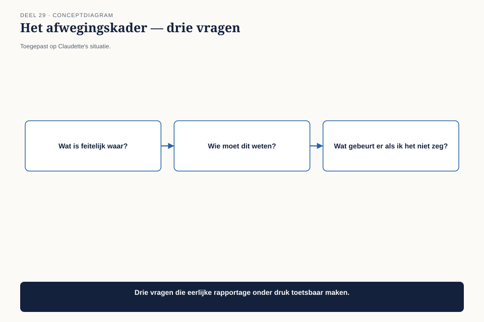
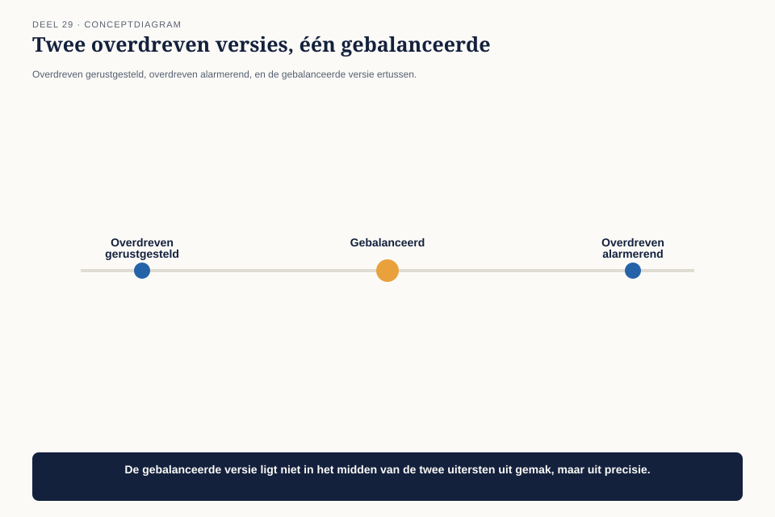

Deel 29 — Gedragscode voor senior architecten
Slidedeck · Ductus-cursus BTABoK · Niveau 3 · deel 29 van 30 · 22 slides
Slide 1 — Titel: Gedragscode voor senior architecten
Deel 29
Ductus
Slide 2 — Agenda: Vandaag
- De vraag van de communicatieafdeling
- De canon, herhaald op het hoogste niveau
- Het afwegingskader
- Eerlijk zonder onnodig alarmerend
Slide 3 — Sectie: 1. De vraag van de communicatieafdeling
Slide 4 — Figuur: Planning naast dekkingsgraad

Slide 5 — Citaat: Kun je het advies zo formuleren dat we niet meteen naar de raad hoeven met een p
Kun je het advies zo formuleren dat we niet meteen naar de raad hoeven met een probleem?
Slide 6 — Bullets: De feiten
- Dekkingsgraad op deze werkstroom: 72%
- Streefwaarde: 90%
- Externe communicatie al gepland richting deelnemers
Slide 7 — Sectie: 2. De canon, herhaald
Slide 8 — Citaat: Niet roekeloos of opzettelijk misleiden over wat is bereikt.
Niet roekeloos of opzettelijk misleiden over wat is bereikt.
— de canon uit deel 1
Slide 9 — Statement: Sterker naarmate het besluit groter en onomkeerbaarder is
Dezelfde regel — scherpere consequenties
Slide 10 — Sectie: 3. Het afwegingskader
Slide 11 — Figuur: Drie vragen

Slide 12 — Tabel: Toegepast
| Vraag | Antwoord |
|---|---|
| Wie beslist, wat als onvolledig? | de raad, over een externe belofte |
| Wiens belang, wiens gemak? | het gemak van communicatie |
| Wat kost eerlijkheid nu vs. later? | ongemak nu, vs. een gebroken belofte later |
Slide 13 — Opdracht: Opdracht 1 — Het afwegingskader toepassen
20 minuten, individueel
Eigen situatie · zou het kader tot een ander antwoord hebben geleid?
Slide 14 — Sectie: 4. Eerlijk zonder alarmerend
Slide 15 — Figuur: Drie versies van hetzelfde advies

Slide 16 — Citaat: 72%, onder onze streefwaarde van 90. Ik adviseer zes weken uitstel, in die tijd
72%, onder onze streefwaarde van 90. Ik adviseer zes weken uitstel, in die tijd naar 85%, en dan communiceren.
— Claudette’s advies
Slide 17 — Statement: Geen alarmbericht zonder oplossing
Geen gerustgestelde vaagheid zonder de kern
Slide 18 — Opdracht: Opdracht 2 — Herschrijven: eerlijk zonder alarmerend
20 minuten, tweetallen
Twee overdrijvingen, dan de balans
Slide 19 — Opdracht: Opdracht 3 — Wiens belang, wiens gemak
15 minuten, individueel
Vier situaties
Slide 20 — Opdracht: Opdracht 4 — Het go/no-go-advies
20 minuten, groepen van 3-4
Probleem, kosten, weg vooruit
Slide 21 — Bullets: Wat de raad besluit
- Zes weken uitstel
- Dekkingsgraad stijgt naar 87%
- De mijlpaal wordt gehaald zoals nu daadwerkelijk aangekondigd
Slide 22 — Titel: Volgende keer
Deel 30 — De capstone
Het complete board-dossier voor CITA-S/P, samengesteld en verdedigd. De afsluiting van de hele cursus.